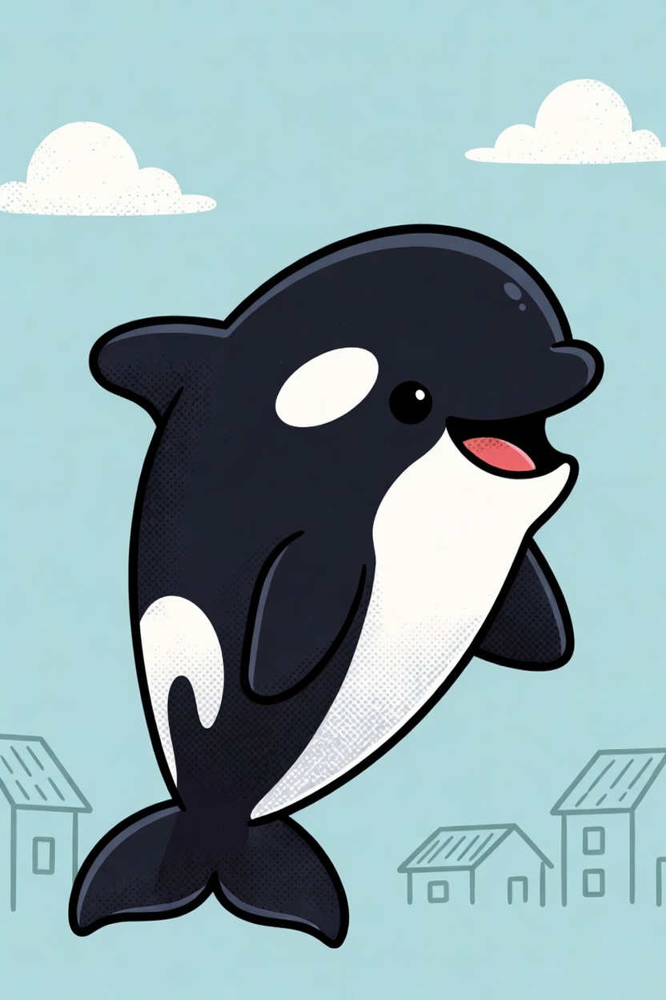

The one-click compare used a June 2026 gateway profile. It is not a current sortition check, and this site does not run it. Use the troubleshooting cards. Nothing you type is uploaded.
A blank Ubuntu server can use Lightchain's own Rails scripts. Node Builder links to that copy and explains the result. The scripts are not stored here, and nothing you paste is sent to this site.
The kit gives you 3 pre-filled files to work from as you go through this wizard. All the mainnet settings are already filled in — you only need to add 3 personal values that you'll generate during setup.
bash setup-check.sh, then bash run-worker.sh. Start the container with the Step 11 command. Do not paste a private key into either file.
| Component | Minimum | Recommended |
|---|---|---|
| CPU | 4 cores (x86_64) | 16+ cores (AMD/Intel) |
| RAM | 16 GB DDR4 | 64 GB DDR5 |
| Storage | 512 GB NVMe SSD | 2 TB NVMe Gen4 |
| GPU VRAM | 8 GB (llama3-8b) | 24 GB |
| Internet | 100 Mbps up/down | 1 Gbps symmetric |
| OS | Ubuntu 22.04+ | Ubuntu 22.04 or 24.04 |
Already on Ubuntu with NVIDIA drivers installed? Click below to automatically check if your machine meets the requirements — no copy-paste needed.
lsb_release -a
curl -s -X POST -H 'Content-Type: application/json' \
--data '{"jsonrpc":"2.0","method":"eth_blockNumber","params":[],"id":1}' \
https://rpc.mainnet.lightchain.aisudo ubuntu-drivers autoinstall sudo reboot
nvidia-smi
curl -fsSL https://get.docker.com | sh sudo usermod -aG docker $USER && newgrp docker
cast command — used for generating keys, checking balances, and funding the worker wallet.curl -L https://foundry.paradigm.xyz | bash foundryup
SORTITION_ENABLED=true and the worker gateway. That profile does not use Redis. Redis is only for the direct profile, which is for Lightchain-operated nodes. Do not install Redis to make this worker healthy.cast wallet new # Copy the output, then export both values: export WORKER_ADDR=0x... # Address from output export WORKER_PRIVKEY=0x... # Private key from output # Verify the key matches the address: cast wallet address --private-key "$WORKER_PRIVKEY"
export RPC_URL=https://rpc.mainnet.lightchain.ai export WORKER_REGISTRY_ADDRESS=0x0000000000000000000000000000000000001002 export AI_CONFIG_ADDRESS=$(cast call $WORKER_REGISTRY_ADDRESS \ "aiConfig()(address)" --rpc-url $RPC_URL) export JOB_REGISTRY_ADDRESS=$(cast call $WORKER_REGISTRY_ADDRESS \ "jobRegistry()(address)" --rpc-url $RPC_URL) export SESSION_MANAGER_ADDRESS=$(cast call $AI_CONFIG_ADDRESS \ "getSessionManagerAddress()(address)" --rpc-url $RPC_URL) echo "AI_CONFIG_ADDRESS=$AI_CONFIG_ADDRESS" echo "JOB_REGISTRY_ADDRESS=$JOB_REGISTRY_ADDRESS" echo "SESSION_MANAGER_ADDRESS=$SESSION_MANAGER_ADDRESS"
0x24D11533C354092ed6E18b964257819cE78Ce77DJobRegistry proxy:
0xfB15F90298e4CcD7106E76fFB5e520315cC42B0bSessionManager proxy:
0xfFFCed75eF4Cdae0Cc33A27Bb46531B957a9f4e7These can change after upgrades. Resolve them live with the commands above.
curl -fsSL https://ollama.com/install.sh | sh ollama serve & ollama pull llama3:8b ollama cp llama3:8b llama3-8b
ollama cp llama3:8b llama3-8b) creates an alias with a dash instead of a colon. The worker looks for llama3-8b (dash) not llama3:8b (colon). Without this alias, the worker can't serve jobs even though the model is downloaded.SUPPORTED_MODELS=llama3-8b in the Docker command — the dash is correct. Using a colon (llama3:8b) will silently break the model registration. This is one of the most common mistakes new operators make.ollama pull gemma4:e2b ollama pull qwen3-vl:8b
curl -s http://127.0.0.1:11434/api/tags | python3 -m json.tool
ollama serve is running.docker pull registry.lightchain.ai/mainnet/worker:latest
<YOUR_PASSWORD> with a strong password you'll remember — you'll need it every time the container starts.mkdir -p ~/lightchain-worker/keys docker run --rm \ -v ~/lightchain-worker/keys:/data \ --entrypoint /bin/lightchain-worker \ registry.lightchain.ai/mainnet/worker:latest \ import-key \ --private-key "$WORKER_PRIVKEY" \ --password <YOUR_PASSWORD> \ --output /data/eth-keystore
$WORKER_ADDR. If they differ, stop — wrong key was imported.docker run --rm \ -v ~/lightchain-worker/keys:/data \ -e WORKER_KEYSTORE_PATH=/data/eth-keystore/$(ls ~/lightchain-worker/keys/eth-keystore/ | head -1) \ -e WORKER_KEYSTORE_PASSWORD=<YOUR_PASSWORD> \ -e ENCRYPTION_KEYSTORE_PATH=/data/worker-encryption.key \ -e RPC_URL=https://rpc.mainnet.lightchain.ai \ -e CHAIN_ID=9200 \ -e WORKER_REGISTRY_ADDRESS=0x0000000000000000000000000000000000001002 \ -e AI_CONFIG_ADDRESS=$AI_CONFIG_ADDRESS \ -e SUPPORTED_MODELS=llama3-8b \ --entrypoint /bin/lightchain-worker \ registry.lightchain.ai/mainnet/worker:latest \ keygen
<FUNDER_PRIVKEY> with your main wallet's private key.export FUNDER_PRIVKEY=0x...
cast send "$WORKER_ADDR" \
--value 50051ether \
--rpc-url "$RPC_URL" \
--private-key "$FUNDER_PRIVKEY"
# Verify the worker received the funds:
cast balance "$WORKER_ADDR" --rpc-url "$RPC_URL" \
| awk '{printf "%.4f LCAI\n", $1/1e18}'getDisputeWindow() = 86400). Nothing is forwarded to the funder wallet. The 50,000 LCAI stake stays locked until deregister succeeds.docker run --rm \ -v ~/lightchain-worker/keys:/data \ -e WORKER_KEYSTORE_PATH=/data/eth-keystore/$(ls ~/lightchain-worker/keys/eth-keystore/ | head -1) \ -e WORKER_KEYSTORE_PASSWORD=<YOUR_PASSWORD> \ -e ENCRYPTION_KEYSTORE_PATH=/data/worker-encryption.key \ -e RPC_URL=https://rpc.mainnet.lightchain.ai \ -e CHAIN_ID=9200 \ -e WORKER_REGISTRY_ADDRESS=0x0000000000000000000000000000000000001002 \ -e AI_CONFIG_ADDRESS=$AI_CONFIG_ADDRESS \ -e SUPPORTED_MODELS=llama3-8b \ --entrypoint /bin/lightchain-worker \ registry.lightchain.ai/mainnet/worker:latest \ register
workers.lightchain.ai — search for your worker address. You should see it listed with status "Online" within a few minutes of starting the container in the next step.
docker run -d \ --restart unless-stopped \ --user root \ --name lightchain-worker \ --add-host=host.docker.internal:host-gateway \ -v ~/lightchain-worker/keys:/data \ -e WORKER_KEYSTORE_PATH=/data/eth-keystore/$(ls ~/lightchain-worker/keys/eth-keystore/ | head -1) \ -e WORKER_KEYSTORE_PASSWORD=<YOUR_PASSWORD> \ -e ENCRYPTION_KEYSTORE_PATH=/data/worker-encryption.key \ -e RPC_URL=https://rpc.mainnet.lightchain.ai \ -e CHAIN_ID=9200 \ -e WORKER_REGISTRY_ADDRESS=0x0000000000000000000000000000000000001002 \ -e AI_CONFIG_ADDRESS=$AI_CONFIG_ADDRESS \ -e JOB_REGISTRY_ADDRESS=$JOB_REGISTRY_ADDRESS \ -e SUPPORTED_MODELS=llama3-8b \ -e OLLAMA_URL=http://host.docker.internal:11434 \ -e BEACON_API_URL=https://beacon.mainnet.lightchain.ai \ -e BLOB_MODE=beacon \ -e SESSION_KEY_FILE=/data/session-keys.enc \ -e RELEASE_STATE_PATH=/data/release_state.json \ -e SORTITION_ENABLED=true \ -e SESSION_MANAGER_ADDRESS=$SESSION_MANAGER_ADDRESS \ -e SORTITION_STATE_DIR=/data/sortition-state \ -e SHUTDOWN_TIMEOUT=240s \ -e WORKER_GATEWAY_URL=https://worker-gateway.mainnet.lightchain.ai \ registry.lightchain.ai/mainnet/worker:latest
docker logs lightchain-worker --tail 30
external worker profile: sortition assignment with gateway egress
worker registration validated
authenticated with worker-gateway
sortition mode
gateway stream connected
Gateway mode without sortition is the old profile. That profile is given no jobs. There is no job line until this worker wins a session.
The one-click scanner scored a June 2026 gateway profile: Redis, a VPN, and the old image. That profile is not a current sortition worker. This public page does not run the scanner. Use the checks below. Nothing you type is uploaded.
The button only talks to a checker on this computer at localhost:8185. This site does not run that checker. The ten manual checks below are the current list.
docker ps --filter name=lightchain-worker
docker logs lightchain-worker --tail 50
docker inspect lightchain-worker --format '{{range .Config.Env}}{{println .}}{{end}}' | grep -E 'SORTITION_ENABLED|SESSION_MANAGER'ollama list
curl -s http://127.0.0.1:11434/api/tags | python3 -m json.tool
curl -s -X POST -H 'Content-Type: application/json' \
--data '{"jsonrpc":"2.0","method":"eth_blockNumber","params":[],"id":1}' \
https://rpc.mainnet.lightchain.ainvidia-smi
df -h ~
docker stats lightchain-worker --no-stream
export WORKER_ADDR=0xYOUR_WORKER_ADDRESS cast call $WORKER_REGISTRY_ADDRESS "isWorkerRegistered(address)(bool)" $WORKER_ADDR --rpc-url $RPC_URL cast call $WORKER_REGISTRY_ADDRESS "getWorkerStake(address)(uint256)" $WORKER_ADDR --rpc-url $RPC_URL cast call $WORKER_REGISTRY_ADDRESS "isWorkerSuspended(address)(bool)" $WORKER_ADDR --rpc-url $RPC_URL cast call $WORKER_REGISTRY_ADDRESS "getOffenseCount(address)(uint256)" $WORKER_ADDR --rpc-url $RPC_URL cast call $AI_CONFIG_ADDRESS "getTimeoutSlashBps()(uint256)" --rpc-url $RPC_URL cast call $AI_CONFIG_ADDRESS "getCompletionTimeoutSlashBps()(uint256)" --rpc-url $RPC_URL cast call $AI_CONFIG_ADDRESS "getDisputeSlashBps()(uint256)" --rpc-url $RPC_URL cast call $AI_CONFIG_ADDRESS "getSuspensionThreshold()(uint256)" --rpc-url $RPC_URL
A checklist and two scripts. They do not contain a key, and they do not start the container. Use Step 11 for the container.
Think of it as renting out your gaming PC's GPU to process AI requests. When someone uses an AI app built on Lightchain, their request gets routed to a worker node like yours. You provide the computing power, they pay in LCAI, you keep the earnings. Your computer does the work, you get paid while you sleep.
Fund the new worker wallet with 50,051 LCAI. Registration locks 50,000. About 50 stays liquid for gas. You get the locked stake back when deregister succeeds, after completed jobs pass the dispute window. Testnet Rails uses 5,000 LCAI-t plus about 50 LCAI-t for gas.
An NVIDIA GPU, 16 GB of RAM, and room for the model. The official run-node table says 8 GB VRAM minimum and 16 GB RAM minimum. AMD GPUs are not in the worker install path. The Rails script stops with no NVIDIA card, under 16 GB of RAM, or under 60 GB free on /. Under 8 GB of VRAM it only warns.
The official setup requires Ubuntu Linux. You can install Ubuntu as your main OS, or set up dual-boot to run Ubuntu alongside Windows (you choose at startup). Running inside a virtual machine (like VirtualBox) is NOT recommended — it can't properly access your GPU. Ubuntu is free to download and install, and it's what Step 2 of this wizard covers.
Docker is a tool that runs software in an isolated container — like a locked box that keeps the node software separate from the rest of your computer. You don't need to understand how it works. You just install it, and the wizard handles the rest. Think of it as a safe sandbox where the node lives.
Ollama runs the model on your GPU. The worker calls it on this machine. The chain name llama3-8b is Ollama's llama3:8b, copied to that dash name. Other whitelisted names use the tag as written.
A private key is the password to a crypto wallet — except it can never be changed or recovered if lost. Anyone who has it controls that wallet completely. The wizard has you generate a separate worker wallet just for the node — different from your main wallet. That way, even in the worst case, your main LCAI balance is untouchable. Write your worker private key down on paper and store it somewhere safe. Never share it. Never put it in an email or chat.
Staking locks 50,000 LCAI in WorkerRegistry while the worker is registered. It is collateral, not a yield product. Deregister returns what remains after any slash. On 16 Nov 2026 the timeout, completion, and dispute slash rates were all 0.
Slashing means the contract takes part of the stake. Deregister does not do that. It reverts until jobs are released. Timeouts and lost disputes can slash, but on 16 Nov 2026 those three rates were 0, so no LCAI moved. An offense is still recorded. Automatic suspension is off on mainnet while the threshold is 1,000,000. Read the rates again before you rely on zero. The documented defaults, if the rates are turned back on, are 1,000 LCAI for a job that was never started and 2,500 LCAI for a job that was acknowledged and never finished.
It earns only while it can claim and finish jobs. Stake stays locked while you are offline. Jobs already claimed still target this worker. If they miss the deadline, that records an offense even while slash rates are 0. A UPS covers a short power cut. Use docker stop -t 300 so a v0.0.5 or newer image can finish the job it is running.
The fee depends on the model. On 16 Nov 2026 llama3-8b, gemma4:e2b, and qwen3-vl:8b were 0.02 LCAI. The worker share was 80 percent, about 0.016 LCAI, paid after the dispute window. The protocol share was 15 percent and the pool 5 percent. Sortition weights eligible workers by stake and reputation, then widens the set every block until someone claims. Minimum stake can still win. Extra stake is not a guaranteed share of every job.
The Docker worker makes outbound calls to the RPC, the beacon, Ollama on this machine, and the worker gateway. It does not need an open inbound port. The worker key should hold only the stake and gas, never the funder key. A VPN is not part of the setup. Keep Ubuntu updated, and do not run a script you have not read.
A quiet log is normal until this worker wins a session. claimed session request, stage 1, and job completed are the job lines. A release line is the payout after the dispute window. An empty answer, including thinking with no visible text, is a failed job. The history page can still say Pending after the chain has already closed it.
The funder wallet sends 50,051 LCAI to a brand-new worker wallet. Registration locks 50,000 of that. The worker wallet also pays gas and later holds rewards. Do not reuse the funder key as the worker key. The worker key sits next to its keystore password.
A VPN is not required. If the RPC curl in Step 3 times out, the provider or the route is blocking it, and a VPN is one workaround. Do not treat a missing VPN as a failed node.
VRAM is the GPU's own memory. nvidia-smi prints it. 8 GB is the published minimum for llama3-8b. A small card should run one model with the context on the GPU. If the context spills to system RAM, the job can miss the 120 second completion limit.
Docker and Ollama have to come back before the worker can finish a job. A VPN is not part of this. Restarting the container does not finish a job that is already acknowledged on chain.
sudo systemctl enable docker
sudo systemctl enable ollama
docker update --restart unless-stopped lightchain-worker
registry.lightchain.ai/mainnet/worker:latest and use an image from v0.0.5 on, so docker stop -t 300 can let a running job finish. An older image ends that job on stop.This is the most frustrating scenario — logs look healthy, container is up, but no jobs. Work through this checklist in order:
A worker started without SORTITION_ENABLED is given no jobs. The gateway does not hand them out.
docker logs lightchain-worker --tail 80 2>&1 | grep -E "external worker profile|sortition"
You want external worker profile. A quiet log after that is normal.
curl -s http://127.0.0.1:11434/api/tags
curl -s -X POST -H 'Content-Type: application/json' --data '{"jsonrpc":"2.0","method":"eth_blockNumber","params":[],"id":1}' https://rpc.mainnet.lightchain.aiOllama must list the chain model name. The RPC must return a block number. A VPN is not the test.
ollama list | grep llama3-8b
You need a model named exactly llama3-8b (dash, not colon). If missing after an Ollama update, recreate it: ollama cp llama3:8b llama3-8b
Check workers.lightchain.ai and search your worker address. If your node shows as "offline" or "suspended", that's the real problem — not a config issue.
Sortition weights eligible workers by stake and reputation, then widens who may claim on each block. Minimum stake can win. Extra stake is not a private queue. A registered worker with the model loaded and sortition on can sit quiet while other workers win the draws.
Ask the indexer whether jobs exist. Field names are state and created_at. A row that says Acknowledged can already be closed on chain.
curl -s -X POST https://workers-api.mainnet.lightchain.ai/graphql \
-H "Content-Type: application/json" -A "Mozilla/5.0" \
-d '{"query":"{ jobs(first:5, orderBy: created_at, orderDirection: desc) { id state created_at } }"}' | python3 -m json.toolIf total recent jobs is very low, the network is quiet — nothing is wrong with your node.
First, read the logs to find the real error:
docker logs lightchain-worker --tail 100 2>&1
The long-running container uses the keystore and ENCRYPTION_KEYSTORE_PATH. Do not pass the key as plain text. Check the password and that both files exist under the mounted /data path.
The container cannot reach the RPC or Ollama. Check curl http://127.0.0.1:11434/api/tags and the RPC curl in Step 3. A VPN is not the first check.
Run the same command without -d so the log stays on the terminal. The image is registry.lightchain.ai/mainnet/worker:latest. An older public image name is not current.
Check GPU VRAM: nvidia-smi. If another app (ComfyUI, Stable Diffusion, etc.) is using VRAM, close it. The model needs ~5GB free.
nvidia-smi
When a job is processing, GPU utilization should spike. If it stays at 0% during a job, Ollama isn't getting the request.
Anything else using the GPU can push the model off the card. One loaded model, with its context on the GPU, is the setup that finishes inside 120 seconds on a small card.
curl http://localhost:11434/api/generate \
-d '{"model":"llama3-8b","prompt":"say hello","stream":false}'Should return a response within 30 seconds. If it hangs or errors, Ollama itself is the problem.
If the stream drops every few minutes:
A VPN is not required. If both the RPC and the gateway time out, the route is the problem. Sortition still needs the RPC even when the stream is down.
Frequent disconnects can mean unstable internet. A phone hotspot as backup internet can help. The container auto-reconnects — but if your ISP connection is flapping, jobs during that window are missed.
First, check your actual stake — you may not have been slashed yet:
export WORKER_ADDR=0xYOUR_WORKER_ADDRESS cast call $WORKER_REGISTRY_ADDRESS "getWorkerStake(address)(uint256)" $WORKER_ADDR --rpc-url $RPC_URL cast call $WORKER_REGISTRY_ADDRESS "getOffenseCount(address)(uint256)" $WORKER_ADDR --rpc-url $RPC_URL cast call $WORKER_REGISTRY_ADDRESS "isWorkerSuspended(address)(bool)" $WORKER_ADDR --rpc-url $RPC_URL cast call $AI_CONFIG_ADDRESS "getTimeoutSlashBps()(uint256)" --rpc-url $RPC_URL cast call $AI_CONFIG_ADDRESS "getDisputeSlashBps()(uint256)" --rpc-url $RPC_URL cast call $AI_CONFIG_ADDRESS "getSuspensionThreshold()(uint256)" --rpc-url $RPC_URL
An offense is recorded even when the slash rate is 0. On 16 Nov 2026 mainnet did not suspend until the offense count reached 1,000,000. Read isWorkerSuspended. Do not call claimTimeout to clear a queue. That call is what records the offense.
The minimum is 50,000 LCAI. If slash rates are still 0, a low balance is unspent gas or a stake that was never the full amount. Deregister does not take a cut of the stake. If a rate is above 0, the penalty is the minimum stake times that rate. Top up with topUpStake if you are under the minimum. Deregister still waits until jobs are released.
Keep Docker and Ollama running. Stop with docker stop -t 300 on a v0.0.5 or newer image. Do not deregister to fix a display label. Deregister returns stake only after the dispute window.
Something's wrong and you need to restart everything cleanly. Run these commands in order:
sudo systemctl start ollama sleep 5 curl http://localhost:11434/api/tags | python3 -m json.tool
ollama cp llama3:8b llama3-8b
docker restart lightchain-worker
docker logs -f lightchain-worker
The bug: the indexer watches WorkerRegistry events but doesn't reset is_registered to true when a new WorkerJoined event follows an earlier ExitFinalized. So the API is wrong — your on-chain state is correct.
Check workers.lightchain.ai and search your worker address. The explorer reads on-chain state directly — if it shows you as active with your stake intact, you are registered. Ignore the API status.
Nothing on the worker. Read isWorkerRegistered with cast. Since 26 Oct 2026 the indexer has also stored timed-out jobs as Acknowledged, so the history page can say Pending for a job the chain already closed. Do not deregister to fix a label.
On 16 Nov 2026 gemma4:e2b was whitelisted, enabled, priced at 0.02 LCAI, and capped at 2048 output tokens. Workers were serving it. Pull the tag as written and add that exact name to SUPPORTED_MODELS. Removing the name from the environment and restarting does not remove a model already added on chain. That takes removeSupportedModel from the worker account.
Other enabled names that day, with the job fee and output cap: llama3-8b 0.02 / 2048, qwen3-vl:8b 0.02 / 4096, glm-4.7-flash 0.02 / 8192, tts-piper 0.02 / 2048, gemma4:26b 0.04 / 8192, gpt-oss:20b 0.04 / 8192, qwen3-coder-next 0.05 / 16384, mistral-small:24b 0.05 / 4096, qwen3.6:27b 0.06 / 8192, qwen3-vl:30b 0.08 / 4096, deepseek-r1:32b 0.08 / 8192, llama3-70b 0.15 / 4096, gpt-oss:120b 0.20 / 8192. qwen3-embedding:0.6b was whitelisted and not enabled. Fees change on chain.
Restarting the container does not complete a job the chain still has as acknowledged. An answer that is only hidden thinking, with no visible text, is a failed job. Do not paste that hidden thinking into the answer. A dispute compares the visible answer.
Three endings, none of which is a container restart. The worker account can call abandonJob while the job is submitted or acknowledged. That refunds the payer, records a reputation timeout, and does not slash or add an offense. It is not a subcommand in the worker CLI. settleStuckJob is the documented no-fault path once the 120 second deadline plus 48 hours have passed. Keepers send it. claimTimeout records an offense. With slash rates at 0 it moves no LCAI, and it is the call to avoid when you only want the slot back.
The history page is not the chain. Since 26 Oct 2026 the indexer has stored timed-out jobs as acknowledged, so a closed job can still look pending. Read the chain before you treat that row as open.
A fresh server with an NVIDIA card. The current script installs the official worker binary as a systemd service. It does not start the Docker image from the steps above. Mainnet stake is 50,000 LCAI, plus about 50 LCAI for gas. Testnet stake is 5,000 LCAI-t, plus about 50 LCAI-t for gas. The default model in the official example is llama3-8b.
git clone https://github.com/lightchain-protocol/lightchain-rails.git cd lightchain-rails sudo bash deploy-worker.sh --network mainnet --models llama3-8b --dry-run
Read the plan. Then run the same command without --dry-run. Add --auto-reboot only if you want the script to reboot itself when the driver install needs it.
These stop the script with exit 4: not running as root, no NVIDIA card, under 16 GB of RAM, under 60 GB free on /. Passing --models-disk lowers that free-space floor on / to 20 GB. The script does not measure the second disk. It formats that disk only when it has no filesystem, labels it ollama, and mounts LABEL=ollama. A disk that already has a filesystem under another label is not wiped, and the mount can fail.
These only warn: under 32 GB of RAM, under 8 vCPU, under 8 GB of VRAM, under 100 GB free on /, and Ubuntu other than 22.04 or 24.04. The 100 GB warning is skipped when --models-disk is set. Under 8 GB of VRAM, the script warns that llama3-8b will not fit, and it keeps going.
A fresh server with a public IPv4 address. A validator on mainnet needs 500,000 LCAI staked per key. On testnet the script's figure is 100,000 LCAI-t. The run also needs the keystores, the password file, and a fee-recipient address. The script does not stake for you, and it does not check that balance.
git clone https://github.com/lightchain-protocol/lightchain-rails.git cd lightchain-rails sudo bash deploy-node.sh --network mainnet --extip YOUR_PUBLIC_IP --dry-run
A validator passes --role validator, --keystores, --password, and --fee-recipient. These stop deploy-node.sh with exit 4: not root, a CPU other than amd64, a role other than node or validator, a validator run missing keystores or the password file or a valid fee recipient, --public-rpc without an allow list or with a bad entry, under 8 GB of RAM, under 150 GB free on the data directory, and no public IPv4. These only warn: Ubuntu other than 22.04 or 24.04, under 16 GB of RAM, under 4 vCPU, and under 200 GB free. The node script uses exit 0, 1, and 4.
The official worker guide is workers.lightchain.ai/run-node.
echo "exit $?" cat /etc/lightchain/deploy-status.json tail -n 40 /var/log/lightchain-deploy.log
Both scripts share /etc/lightchain/deploy-status.json, /var/log/lightchain-deploy.log, and the lock /var/lock/lightchain-deploy.lock. The script field says which one wrote the file. The updated field is UTC. If that time is not this run, you are looking at an older file. Read the end of the log.
Paste the status file below if you want this page to explain it. The text stays in this browser. It is not uploaded.
0 running. Back up /etc/lightchain/worker/. That directory holds the worker key, the encryption key, and the password.
1 failed, or the shared lock is busy. A second deploy exits 1, writes a line to the log, and leaves the old status file in place.
2 needs funding. Mainnet: send 50,000 LCAI plus about 50 LCAI for gas to the address in the file. Testnet: send 5,000 LCAI-t plus about 50 LCAI-t for gas. Then run the same command again.
3 reboot required. The NVIDIA driver was installed. Reboot. If the deploy does not continue, run the same command again.
4 preflight refused. Not root exits before a status file is written. The other three stops write state failed and then exit 4.
A missing file means this run never reached the preflight write. run as root and exit 4: run it as root. A bad flag, or a network name other than mainnet or testnet, exits 1 before that check. --version and --help exit 0 and write nothing. --dry-run exits 0 after printing the plan and writes nothing. A busy lock exits 1 after the root check. The script may also never have been run. If a file is present and its updated time is old, this run died before it could replace that file.
lcw status systemctl status lightchain-worker journalctl -u lightchain-worker -f
systemctl stop lightchain-worker drains an in-flight job, up to 4 minutes. lcw deregister leaves the network after the dispute window. Back up /etc/lightchain/worker/ after the first successful run. Losing the encryption key after registration means the worker cannot serve sessions.